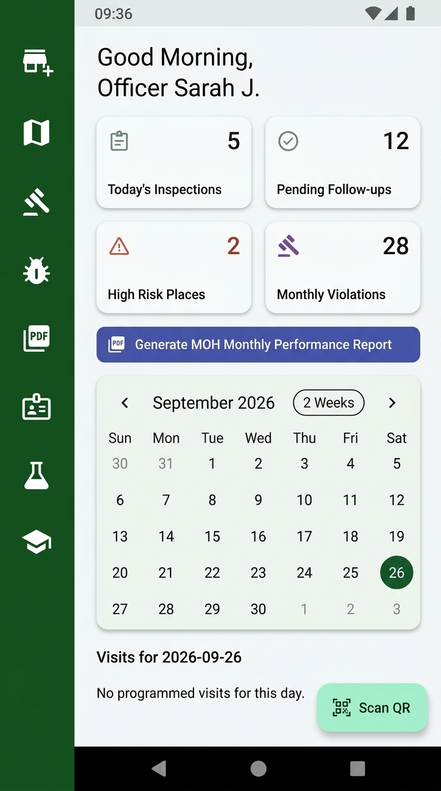

Version 0.2.0 (Latest Release)
100% Offline Capable
Free & Open Source (MIT)
Smart Health Inspection,
Simplified in Your Pocket
ශ්රී ලංකා මහජන සෞඛ්ය පරීක්ෂක (PHI) නිලධාරීන්ගේ ක්ෂේත්ර රාජකාරි සඳහාම සකසන ලද ඩිජිටල් කළමනාකරණ යෙදුම.
ආහාර පනත යටතේ පරීක්ෂණ වාර්තා (H-800), අධිකරණ B-වාර්තා, ඩෙංගු අධි-අවදානම් කලාප සිතියම්ගත කිරීම සහ MOH මාසික වාර්තා ක්ෂණිකව ඔබගේ ඇන්ඩ්රොයිඩ් දුරකථනයෙන්ම සකසා ගන්න.
ජංගම දුරකථනයෙන් Scan කරන්න
ඔබ පරිගණකයෙන් පිවිසියේ නම්, ඔබගේ දුරකථන කැමරාව මෙම QR කේතයට යොමු කර කෙලින්ම APK එක දුරකථනයට බාගත කරගන්න.
